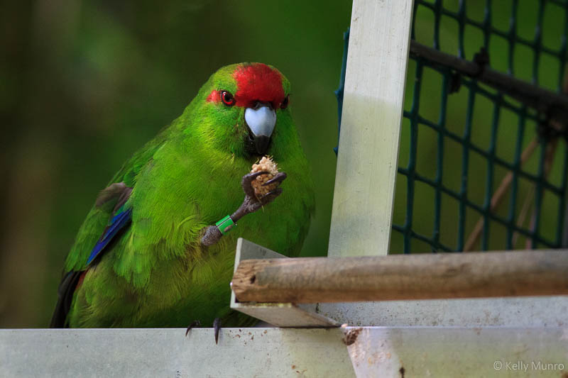
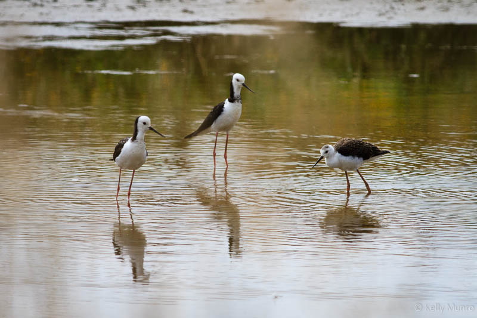
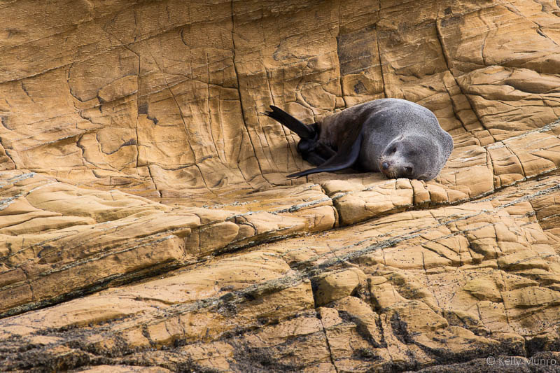
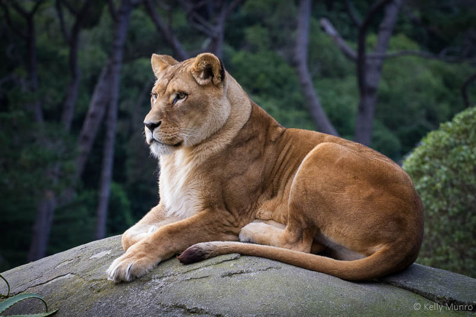

Wellington is the southern most city in the North Island of New Zealand. It has been named "the coolest little capital in the world" by Lonely Planet.
Wildlife and the City...
Despite being a large urban centre, there are several places close to Wellington city that make for great wildlife and bird watching:
from zoos and predator-fenced bird sanctuaries to wildlife reserves and seal colonies.

Forest Birds
There are several places near Wellington to see forest birds.
- Zealandia Ecosanctuary - a predator-fenced open air sanctuary, 10 minutes drive from the Wellington CBD. As well as some of the more common native birds, Zealandia is also home to rarer species such as saddlebacks, hihi, kaka, and little spotted kiwi.
Admission charges apply.
- Otari Wiltons Bush - the only public botanic garden in New Zealand that is dedicated solely to native plants. Commonly seen birds species include tui, kereru, silver eye, kingfisher, grey warbler, bell birds and morepork.
- Kapiti Island Nature Reserve - a predator free wildlife reserve island off the coast of Paraparaumu. Bookings required.
Back to top »

Sea Birds
Red-billed gulls and black-backed gulls are found throughout the city, including along the waterfront in the CBD. Heading north from the city, there are two large wetland areas that are home to sea birds.
- Pauatahanui Wildlife Reserve - the tidal mud-flats and regenerating scrub land are home to several local and migratory birds. Species include pied stilts, royal spoonbills, kingfishers, pukekos, black shag, capsian tern, bar-tailed godwit, white faced heron, paradise shelduck.
- Waikanae Estuary - species include variable oystercatchers, white-fronted terns, shags, gulls.
Back to top »

Seals
New Zealand Fur Seals (Kekeno) are found along the coastline of New Zealand. There is a large male only seal colony at Sinclair Head (Te Rimurapa) near Red Rocks on Wellington's south coast.
- Sinclair Head (Te Rimurapa) - up to 150 NZ Fur Seals come ashore between May and August to rest and feed.
- Cape Palliser - located on the Wairarapa Coast, Cape Palliser is home to the North Island's largest seal colony. Breeding season is from November to January.
Back to top »

Exotic Wildlife
Zoos and wildlife parks around the Wellington region are home to both native, introduced and exotic species.
- Wellington Zoo - home to over 100 species including Sumatran Tigers, Cheetahs, Malayan Sun Bears, White-Cheeked Gibbons and an Australian Pelican.
- Staglands - home to Blue ducks, Kea, Kaka, Falcon, Brown teal, Kunekune pigs, Arapawa island goats, as well as several more common farm animal species.
Back to top »